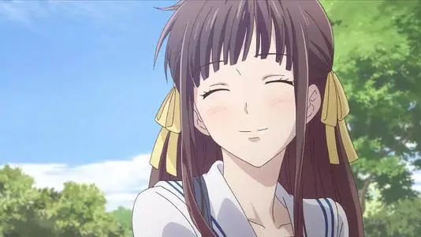
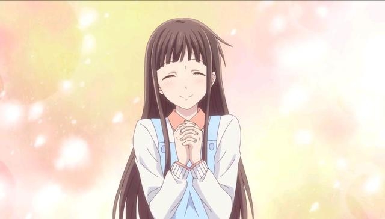
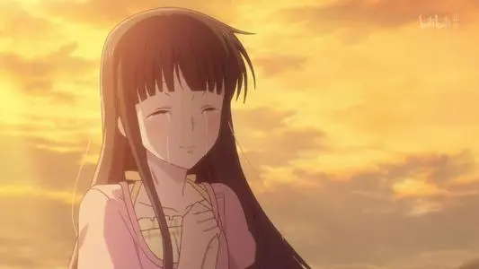

本田透，是《水果篮子》中登场的女主角。心地善良，勤劳自立，为人温柔，又有些呆憨，有着超乎常人的共情能力和同理心，是属于那种温馨治愈系的角色。父母过世后寄宿于亲戚家，后来搬到山里，因山崩遇到麻烦，偶然得到同学草摩由希与小说家草摩紫吴的帮助，住进了草摩家，并在与草摩家族相处过程中发现了草摩家的秘密，也给被附身的草摩家的人带来无限温暖，成为了他们不能失去的人。
| 基本资料 | |
|---|---|
| 本名 | 本田透 |
| 别号 | |
| 发色 | 棕发 |
| 瞳色 | 绿瞳 |
| 身高 | 156cm |
| 体重 | 46kg |
| 年龄 | 16岁 |
| 生日 | 5月29日 |
| 血型 | B型 |
| 星座 | 双子座 |
| 声优 | 石见舞菜香（新版动画） |
| 萌点 | 长直、齐刘海、温柔、小天使 |



《水果篮子》的女主角，因擅长做家事而住进草摩家。家事全能，为了能够自己生活而十分努力的打工。个性善良天然、温柔开朗，由于可爱脱俗因此深受男主角一家的喜爱。因为和去世的母亲做过约定，对于自己的要求颇高。在父母去世后先寄宿于亲戚家，后搬到了山里，但遇到了山崩。在帐篷中后来被草摩紫吴(十二生肖的狗)和草摩由希(十二生肖的鼠)发现，借住在紫吴家中后来知道草摩家的重大秘密(被异性拥抱就会变成动物，一段时间后就会变回来，但是不穿衣服…)。虽然经历了许多痛苦的事，在别人面前却仍很坚强，带给被附身的草摩家的人无限的温暖。
在水果篮子中，小透所扮演的是一个中心角色，在故事中，她就像仁慈和欢乐女神一样，把她的包容，善良，仁慈，温柔，无私和善解人意带给了因为受到诅咒而承受被父母抛弃，被命运捉弄，被他人歧视的痛苦的草摩家众人。正是因为她，背负着诅咒的草摩家众人才重新体会到人生的快乐与温馨，才重新体会到自己被别人关心、喜欢的感觉，也正是小透给了他们无限的勇气与欢乐。在草摩家十二生肖心中，小透已经成为他们最重要的人，最喜欢的人，不管是长期相处的由希、夹，还是偶尔见面的其他人，他们无一不被小透感动着，无一不被透的善良，乐观，单纯所影响着。
当然，透之所以这样美好的像女神一样，除了她天生的性格和人品，她的精神源泉--母亲的作用也是不容忽视的，她的母亲不仅给了她最好的启蒙教育，教会她怎样做人，怎样做自己，怎样帮助别人，还在自己逝世后成了鼓励小透的精神支柱。可以说正是透的母亲的伟大和正直的高尚人格造就了这样美好的小透，在妈妈的支持下，在朋友的帮助下，小透她自始至终的将自己的优点用在帮助她的朋友上，她甚至克服了自己对异型的恐惧，接纳了夹。可以说她真的是像天使，女神一样的女孩。
另外，在动画中，作者的优秀刻画和声优的卓越配音，让小透的另一个特点--纯洁的傻体现的淋漓尽致，在剧作中体现的十分搞笑，相信大家一定也深有感触吧。最后，这部作品她的升华之处就在于小透的这种伟大精神与人格。在她的努力下，她的朋友们和爱人终于摆脱痛苦，走向新的人生。